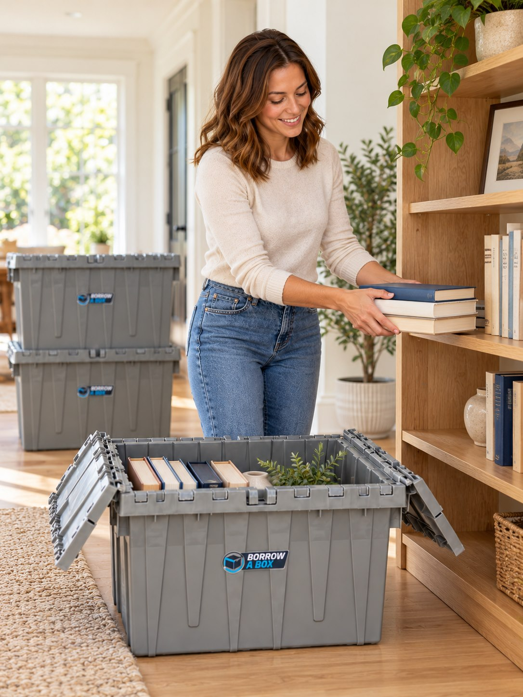
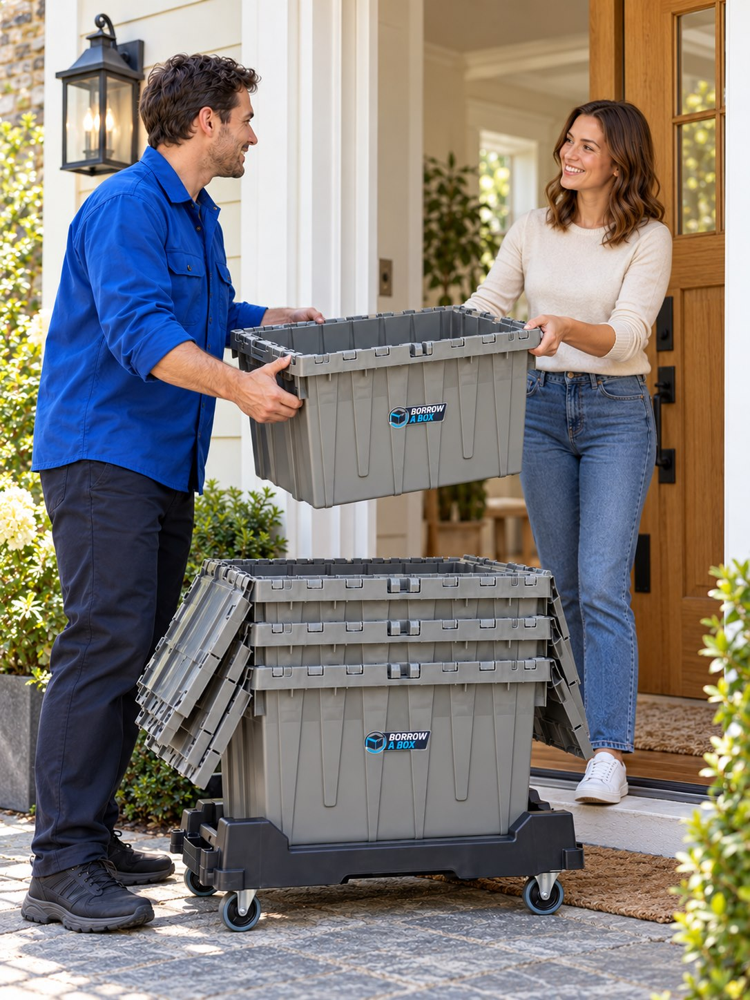

01 / Your next chapter
Moving made
lighter.
lighter.
The original tote photograph fills the opening. A large headline makes the service feel physical and human.
Motion and interaction
One coordinated image-and-text entrance.
Borrow A Box / Story edition
Editorial scale and pacing inspired by the Lando Norris reference. The original Borrow A Box logo, service content and blue identity stay central.
Matching AI-generated service illustrations. On the home page these crossfade as each step changes, in either scroll direction.




See the animated journey ↗ · Image prompts and asset details
The original tote photograph fills the opening. A large headline makes the service feel physical and human.
One coordinated image-and-text entrance.
A service statement takes the place of a generic features grid.
Scroll highlights each promise while a quiet route draws behind it.
Delivery, packing, unpacking and collection form a four-step narrative.
A pinned desktop scene with clickable steps; ordinary stacked scenes on mobile.
An asymmetric collage pairs real reviews with customer-photo spaces. Full reviews open on demand.
Gentle photo parallax. Approved customer photos are still needed.
A staggered gallery gives every kit a quantity, price, description and add-to-cart path.
Decorative tote line drawings reveal as the gallery comes into view.
Reuse, FAQs, service coverage and a clear booking invitation close the story.
A calm blue finish. Profile and booking continue on the original Wix site.
Two photo spaces are explicitly labelled until approved customer pictures are supplied. Existing quotes are retained in full behind the review buttons.
Working clone: outputs/borrow-a-box-story. The earlier project is unchanged. Open editable Figma storyboard ↗